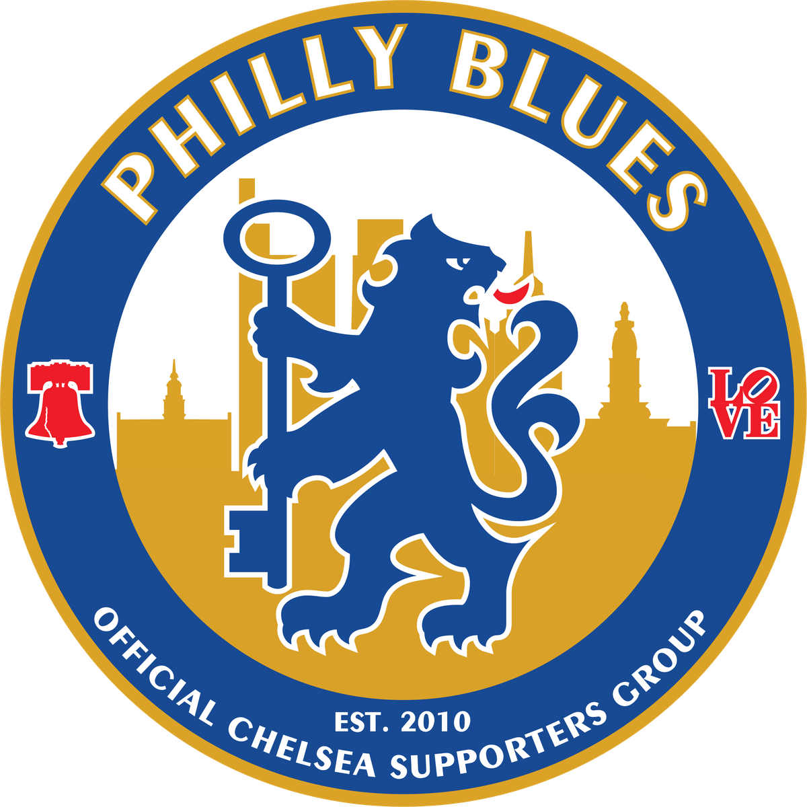
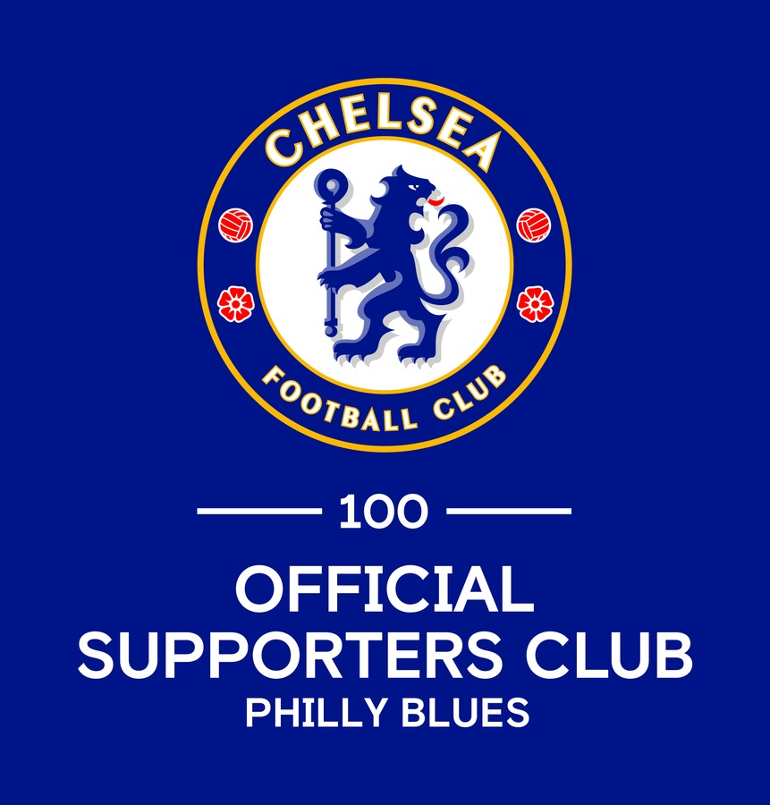

We're back at
Cavanaugh's Rittenhouse
Cav's was our temporary home in 2020/21 — the season Chelsea won the Champions League. It's since moved a block and been rebuilt from the ground up. We're back at 1921 Sansom St for 2026/27, this time for good.
1921 Sansom St
Philadelphia, PA 19103
cavsrittenhouse.com

Back at Cav's
A proper room for a proper support
Cavanaugh's Rittenhouse sits just off Rittenhouse Square in Center City — walkable, transit-friendly, and built for watching football. Every match on, sound up for Chelsea, and enough space that the whole group fits without anyone craning at a corner screen.
You don't need to be a member to come watch. Turn up, find the banner, and someone will make room. That's the whole entry requirement.
Matchday details
- Where
- Cavanaugh's Rittenhouse
1921 Sansom St, Philadelphia, PA 19103 - When
- Every Chelsea match, home and away
- Arrive
- Roughly an hour before kickoff
- Look for
- The Philly Blues banner
- Questions
- phillyblues2010@gmail.com
Who we are
Philadelphia's official home for Chelsea supporters
The Philly Blues are an officially recognised Platinum Tier Supporters Group of Chelsea Football Club, bringing together Chelsea fans from across the Philadelphia region since 2010.
Platinum status isn't just a title. It means recognition on the official Chelsea FC website, priority access for the Player of the Year dinner, and a route to matchday tickets at Stamford Bridge. It also means the club takes our numbers seriously — which is why membership matters.
We're one of 32 Platinum clubs worldwide, and the only one in Philadelphia. We're an independent supporters group with a direct affiliation to Chelsea Football Club.

Membership & tickets
How matchday tickets work in 2026/27
Home tickets no longer go through us. Members now apply to Chelsea directly. Away tickets are unchanged — those still come through the Philly Blues.
You'll need an active Official Chelsea Membership to apply for any ticket at Stamford Bridge. Chelsea offers five tiers; note that Ticket Forwarding memberships cannot earn loyalty points, which matters for in-demand matches.
Membership with us is free — no dues, now or ever. The only costs are Chelsea's own: the membership fee you pay them, and any tickets you buy.
Send us your Chelsea membership number and we'll add you to the roster. Anything after that, just ask.
- Buy an Official Chelsea MembershipRequired for anyone attending a match at Stamford Bridge.
- Join the Philly BluesUse the form below. It's free, and we'll send you next steps.
- Send us your Chelsea membership numberSo we can add you to our roster for away ticket requests.
- Apply per matchHome direct through Chelsea, away through us. See below.
You apply directly to Chelsea
Chelsea opens an application window for each home fixture on their eTicketing platform. Apply any time within the window — entering early doesn't improve your odds.
- Allocated by an automated process, not first-come
- Apply alone or as a group
- Groups are allocated together
- In-demand matches set a minimum loyalty point requirement
- If one person in a group falls short, the whole application fails
Order through the group
Away requests still run through the Philly Blues. The process varies by fixture, so get in touch and we'll sort you out.
- Sold on a loyalty point basis, with the number needed announced per match
- Away tickets can only be passed to an eligible member
Points are earned by attending matches, not by buying tickets — your ticket has to be scanned at the turnstile. Buying away tickets still earns points. Anyone who bought a membership before 4pm on 31 July 2026 picked up five bonus points.
Ticketing rules changed substantially for 2026/27. If anything here doesn't match what you're seeing on Chelsea's site, Chelsea's site wins — and let us know so we can fix it.
Join us
Get on the list
Interested in joining? Send us your details and we'll be in touch with membership information. If you just want to know when the next match is on, say so — we'll add you to the matchday emails and leave it at that.
You can also reach us any time at phillyblues2010@gmail.com.